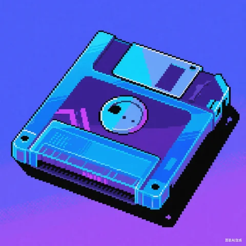
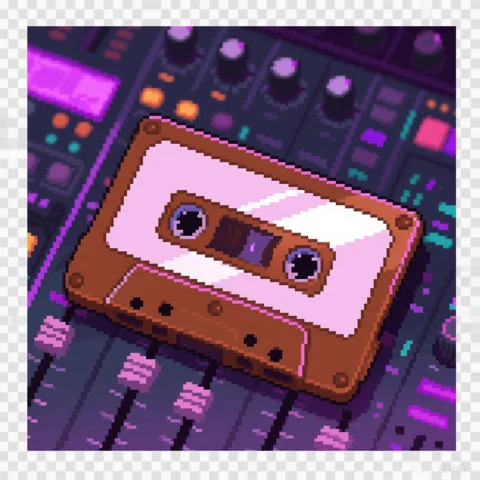
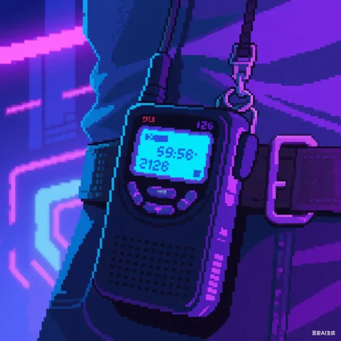
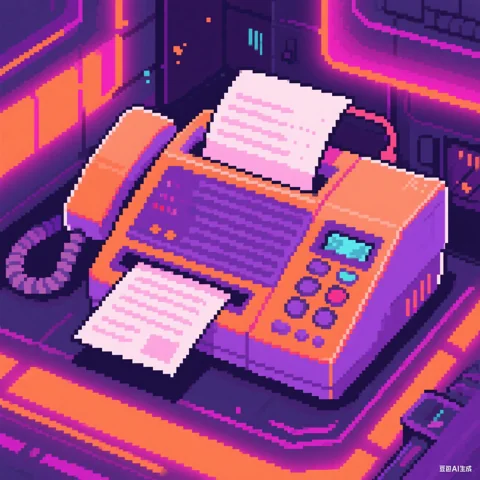
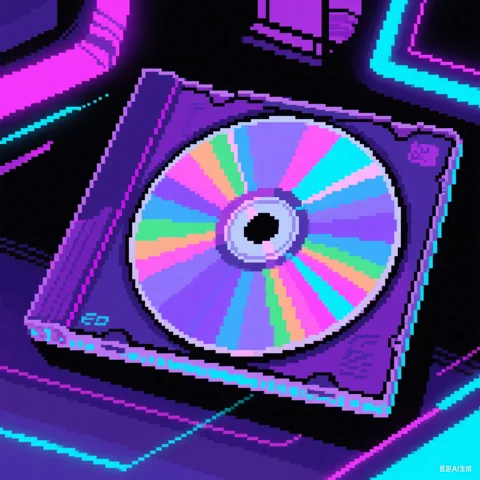

🔊
🎵
🌊
记忆碎片：数字乡愁
开始游戏
零
继续
选择你的行动
记忆碎片：数字乡愁
收集进度:
0/5
乡愁指数:
0%
效率中枢：数据处理的神经中枢，冰冷的金属架构中流淌着数字的血液，每一个节点都承载着时代的记忆碎片。
👨💻
💻
老式电脑
📖
记忆之书
奇奇





前往消费幻境
前往遗忘回廊
记忆树
1
2
3
4
5
6
7
8
9
当前碎片
❓
未收集任何碎片
探索数据坟场，寻找并收集记忆碎片。每个碎片都承载着数字时代初期的珍贵记忆。
继续探索
关闭
👨💻
年轻人，你也是来找那些老古董的吗？这些机器里藏着我们那个时代的记忆...
帮助修复电脑
询问记忆碎片
关闭
代码拼图
✕
提交
重置
零
继续
选择你的道路
科技迭代的残酷在于：
它把昨天的奇迹
变成明天的废铁
却把后天的乡愁
铸进今天的游戏
——谨以此作致敬所有过期未来
记忆碎片：数字乡愁
回到现实
DEV
开发者控制台
快捷键: Ctrl + D
跳转到场景1 (效率中枢)
跳转到场景2 (消费幻境)
跳转到场景3 (遗忘回廊)
跳转到主菜单
跳转到完成界面
测试《存档之后》
设置收集进度:
设置进度
重置游戏
解锁所有碎片
关闭面板
显示元素边界
测试奇奇显示
调试场景2
调试金句显示